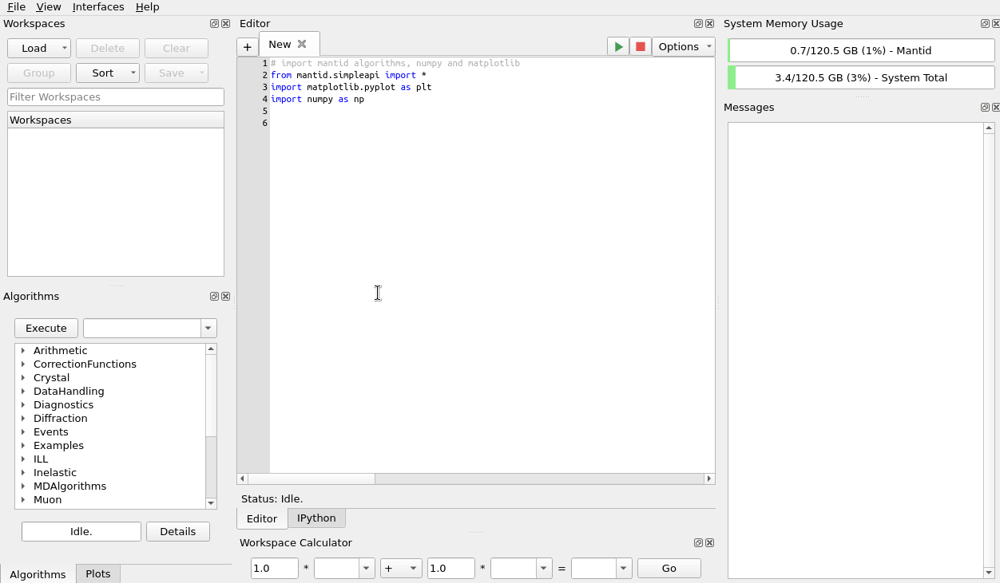
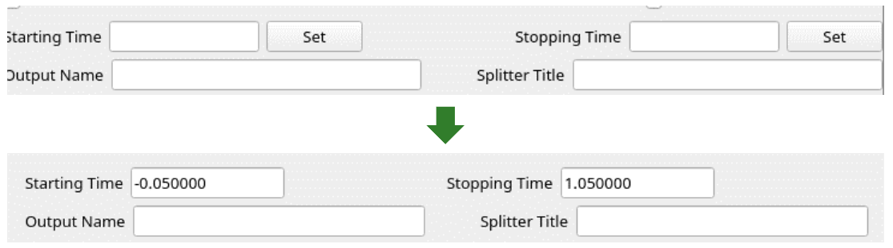

Framework Changes#
Algorithms#
New features#
Algorithm SaveAscii v2 now supports 1D MD Histogram Workspace.
Algorithm CompressEvents v1 is now able to combine events together in logarithmically increasing size groups.
Algorithm PolarizationCorrectionWildes v1 now accepts input workspace order.
Algorithms Abins v1 and Abins2D v1 can now import phonopy .yaml data. The force constants are stored in a file named
FORCE_CONSTANTSorforce_constants.hdf5in the same directory as the YAML file. This is recommended when using large force constants arrays as the YAML loader can be very slow.Algorithms Abins v1 and Abins2D v1 now support frozen atoms in data from GAUSSIAN.
Similarly to the frozen-atoms (“selective dynamics”) support for VASP outputs, frozen atoms will be disregarded in the calculation of inelastic scattering structure factor.
Algorithms Abins v1 and Abins2D v1 now support JSON file import. The Euphonic JSON formats are convenient to create with Python scripts, and recommended for users who wish to somehow customise or manipulate their data before using it with Abins(2D). Supported formats are:
AbinsData: dump of internal object, intended for development and testing.euphonic.QpointPhononModes: an equivalent set of data dumped from the Euphonic library.euphonic.ForceConstants: force constants which may be manipulated in Euphonic, and will be converted to phonon modes on a q-point mesh when Abins(2D) is run.
New algorithm LoadErrorEventsNexus to load events from the
bank_error_eventsbank of a NeXus file.Re-implementation of LoadEventNexus when specifying the
CompressTolerance. This uses significantly less memory to create fewer events overall. However, the execution time ofLoadEventNexusitself is generally longer; workflows that benefit fromCompressEventsgenerally run faster.Algorithm FindSXPeaks supports new peak finding strategy
AllPeaksNSigma. Credits to the author of SXD2001 for the idea of using NSigma as a threshold (albeit in SXD2001 the peak finding is done in 3D). Gutmann, M. J. (2005). SXD2001. ISIS Facility, Rutherford Appleton Laboratory, Oxfordshire, England.Algorithm FindSXPeaks now includes validation rules to remove spurious peaks due to noise, by allowing user to provide additional arguments as below:
MinNBinsPerPeak, the Minimum number of bins contributing to a peak in an individual spectrumMinNSpectraPerPeak,MaxNSpectraPerPeakMinimum & Maximum number of spectra contributing to a peak after they are grouped.
Bugfixes#
Algorithm LoadNexusProcessed is now faster to load a NeXus file.
Algorithm
DSFinterp, which was deprecated, has been removed.Abins v1 and Abins2D v1 no longer influence each other:
Abins v1 algorithm sets the value
abins.parameters.sampling["bin_width"]while running. Previously this overrided the default sampling of Abins2D v1 instruments if set.This did not cause results to be incorrect, but sampled them on a different mesh to the expected one and could limit resolution.
Now the value is saved and restored after use by Abins v1; it can still be modified by users who wish to fiddle with the Abins2D v1 behaviour.
Algorithm Load now loads a single file faster.
Algorithm FindPeaks no longer crashes when the number of bins in the workspace are not sufficient to run SmoothData v1 algorithm.
Fit Functions#
Bugfixes#
Search box for fitting functions in Fit interface no longer shows duplicate functions.
Fit Function
DSFinterp1DFit, which was deprecated, has been removed.CompositeFunction will now throw an exception if
getNumberDomains()is called and there is an inconsistent number of domains in any of the member functions.
Data Handling#
New features#
Algorithm LoadEventAsWorkspace2D v1 accepts new boolean parameter
LoadNexusInstrumentXML. Default is true.File search/loading will now look in instrument data cache on IDAaaS. The instrument data cache is the directory
/data/instrument/present on IDAaaS, and contains the same raw data as the data archive from the past 3 years. This new feature will speed up file loading times for external users on IDAaaS that do not have access to the data archive. Please note that if you are not on IDAaaS, avoid creating the directory/data/instrument/as this will trigger a search for files inside that directory. Here is a demonstration on IDAaaS showing that an instrument file can now be loaded even when the archive is turned off (purely for demonstration purposes):
{kind=link}

Bugfixes#
Algorithm Load v1 now guarantees that properties
LoaderNameandLoaderVersionare set by end of algorithm.Algorithm GenerateGroupingPowder v2 now allows just one of the properties
GroupingWorkspaceandGroupingFilenamebe set.
Data Objects#
New features#
Sped up processing of IDF XML during loading when
side-by-side-view-locationparameter is not used.
Python#
New features#
Peak Shapes (NoShape, PeakShapeSpherical, PeakShapeEllipsoid) and
mantid.api.IPeak.setPeakShape()are now exposed to Python allowing you to manually create and set the peak shapes.
Bugfixes#
Filter Events Interface is now stricter with inputs and no longer crashes due to invalid value of TOF Correction To Sample.
The two sliders of the interface are now prevented from crossing each other and are automatically updated from the user input, no longer requiring a Set button:
{kind=link}

Dependencies#
New features#
Dropped support for end-of-life numpy 1.22 and 1.23, and extended support to 1.25 and 1.26.